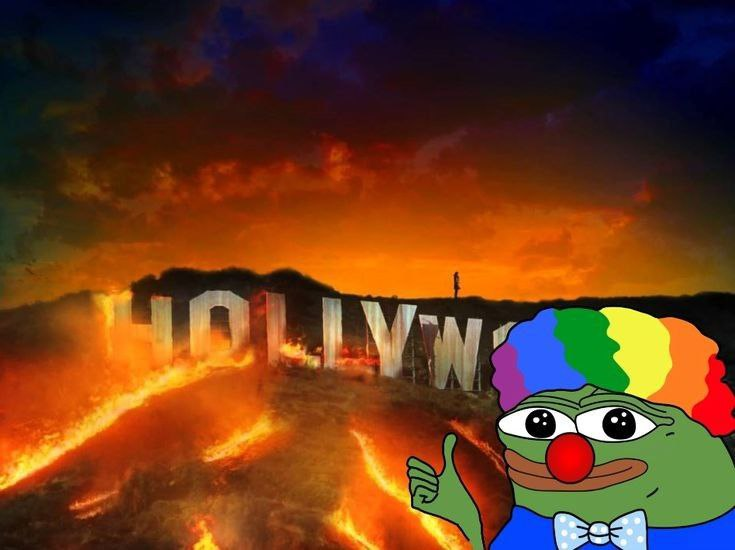

"Fuck the World!: Почему мы так говорим и что с этим делать?
Фраза "Fuck the World!" стала своеобразным мемом, криком души и выражением разочарования для многих людей по всему миру. Она отражает чувства усталости, безысходности и протеста против несправедливости, хаоса и абсурда, которые мы часто наблюдаем вокруг себя. Но что стоит за этим выражением? И как можно превратить этот негативный посыл во что-то конструктивное?
**Почему мы так говорим?**
Мир действительно может казаться oppressive. Новости полны насилия, экологические катастрофы становятся реальностью, социальное неравенство растёт, а личные проблемы часто кажутся неразрешимыми. В такие моменты фраза "Fuck the World!" становится способом выпустить пар, выразить своё отчаяние и дистанцироваться от всего, что происходит вокруг. Это не просто слова — это эмоциональная реакция на ощущение потери контроля. Мы чувствуем, что мир несправедлив, и это вызывает гнев, разочарование и желание "сбежать" от реальности.
**Что скрывается за этим чувством?**
За фразой "Fuck the World!" часто скрывается глубокое желание перемен. Мы хотим, чтобы мир стал лучше, но не знаем, как этого добиться. Это чувство может быть связано с: — Ощущением одиночества и отсутствия поддержки. — Усталостью от постоянной гонки за успехом. — Разочарованием в системе, которая кажется несправедливой. — Страхом перед будущим и неопределённостью.
**Как превратить негатив в действие?**
Вместо того чтобы оставаться в состоянии "Fuck the World!", можно попытаться направить эту энергию в конструктивное русло. Вот несколько идей: — Ищите поддержку. Поделитесь своими чувствами с близкими или найдите сообщество, где вас поймут. — Действуйте локально. Иногда мир кажется слишком большим и сложным, но даже маленькие шаги — помощь соседу, волонтёрство, забота о природе — могут изменить ваше восприятие. — Пересмотрите свои ожидания. Мир никогда не будет идеальным, но это не значит, что в нём нет места для радости и смысла. — Занимайтесь саморазвитием. Иногда лучший способ справиться с хаосом — это работать над собой, развивать resistance и находить внутренний покой.
**Fuck the World!, но мир всё ещё может быть прекрасным**
Да, мир не идеален. Он может быть жестоким, несправедливым и абсурдным. Но в нём также есть место для любви, красоты, дружбы и вдохновения. Вместо того чтобы отвергать всё вокруг, попытайтесь найти то, что делает вашу жизнь ценной.

**Заключение:**
Фраза "Fuck the World!" — это не конец, а начало. Это призыв к осознанию проблем и поиску решений. Вместо того чтобы сдаваться, используйте эту энергию для того, чтобы сделать мир вокруг себя чуточку лучше. Потому что, в конце концов, мир — это мы. И только от нас зависит, каким он будет.
**P.S.**
А если сегодня всё кажется слишком сложным, просто скажите "Fuck the World!", глубоко вдохните и сделайте шаг вперёд. Завтра будет новый день.
Жизнь — это то, что происходит с нами, пока мы строим другие планы.